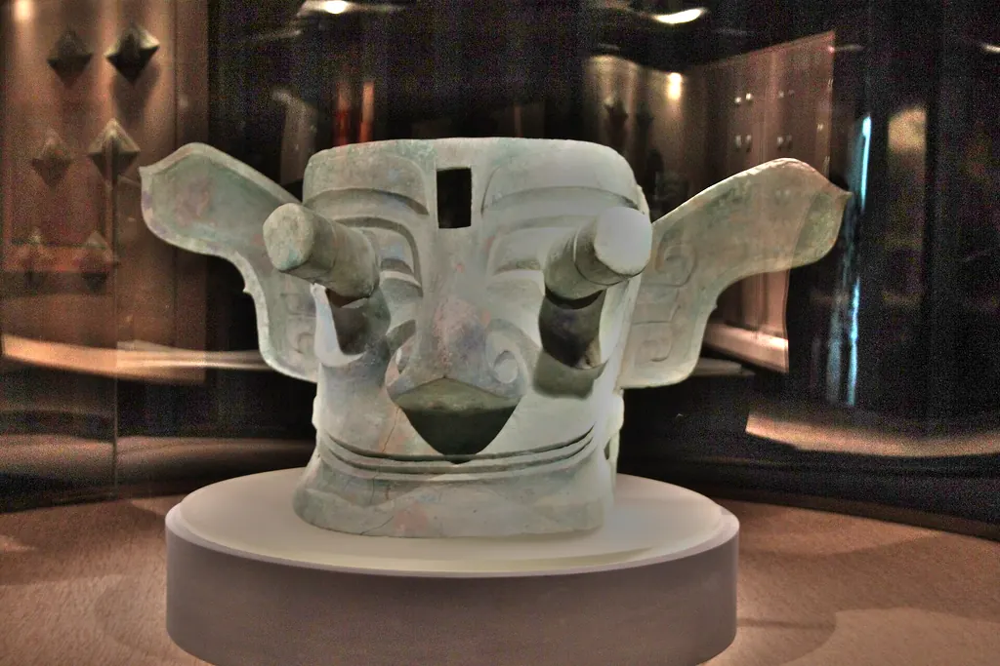
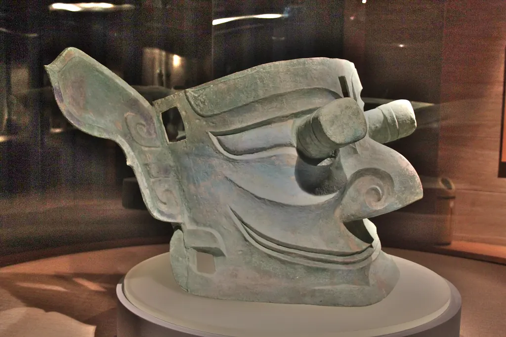
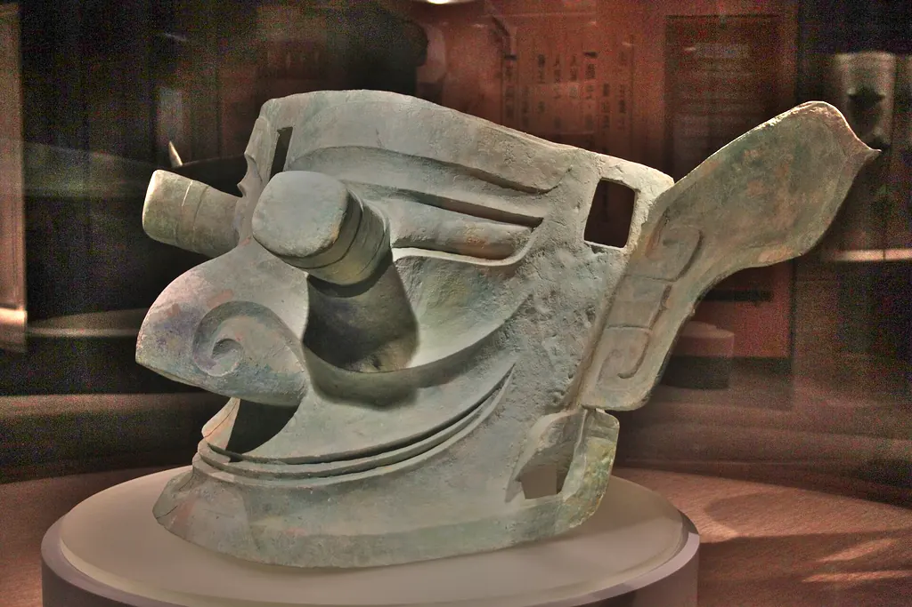
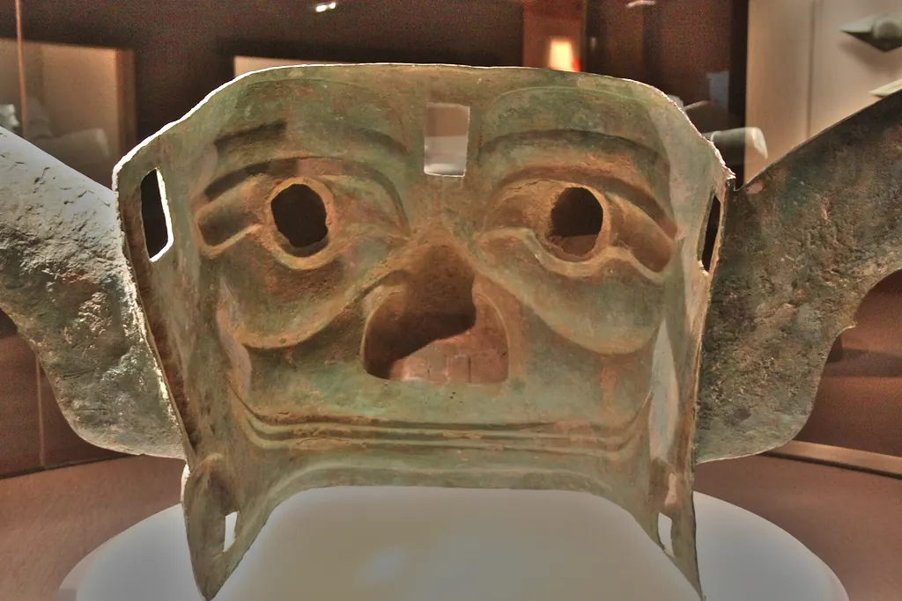

展牌宽 138 厘米，高 66 厘米，三星堆出土形体最大的两件面具之一。
一种说法展牌写：一般认为它的眼睛符合史书里蜀人始祖蚕丛“纵目”的记载，可能是祖先神像。这是解读，不是定论。
示意这个 3D 模型是照着下面 4 张照片和展牌尺寸手工估出来的：在照片上点出额头方孔、眼柱端头、鼻尖、耳尖等位置，反推每张照片的拍摄角度，再调形状。眼柱长短、脸往前探多少、侧壁多深、铜壁厚度都是估的；背后和顶上没有照片，是补的。表面贴的就是这几张照片（展厅灯光压平了一些），所以会带着照片里的反光。真器物以博物馆为准。




照片：Gary Todd（WorldHistoryPics），三星堆博物馆，Wikimedia Commons “Ancient Bronze Mask from Sanxingdui with Protruding Eyes & Ears a/c/d/e”，CC0。展牌文字据其照片。